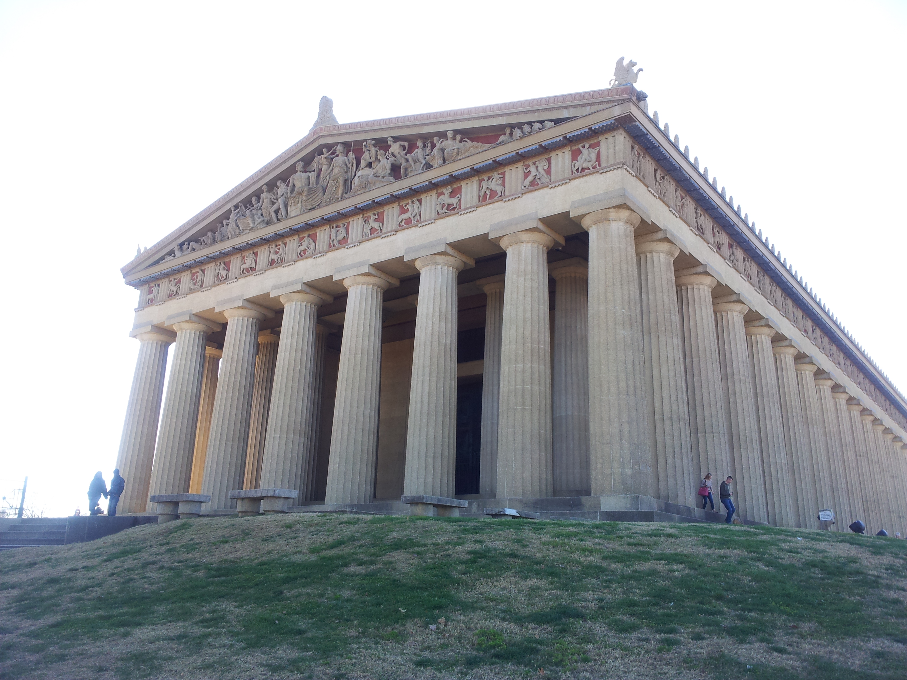

Cape Girardeau, Missouri

The Bill Emerson Memorial Bridge Over the Mississippi River
The Bill Emerson Memorial Bridge is named for the eight-term Southeast Missouri congressman who helped lead efforts to secure funding for its construction. It was opened in 2003 at a cost of $100 million, 80% funded by the Federal Government. The remaining $20M was shared by MO and IL. - Source: Modot.org
Kansas City, Missouri

The Kemper Museum of Contemporary Art
At Kemper Museum there is no charge for admission, parking, special exhibitions, or programs. Memberships underwrite these expenses and inspire many thousands with contemporary art each year. The Kemper Museum of Contemporary Art opened in 1994 and draws more than 100,000 visitors each year. - Source: kemperart.org
Nashville, Tennesse
The Parthenon
The Parthenon stands proudly as the centerpiece of Centennial Park, Nashville's premier urban park. The re-creation of the 42-foot statue of Athena is the focus of the Parthenon just as it was in ancient Greece. The building and the Athena statue are both full-scale replicas of the Athenian originals. - Source: nashville.gov
North Jackson, Ohio

The National Shrine of Our Lady of Lebanon
Since its dedication in 1965, the Basilica and the National Shrine of Our Lady of Lebanon has been a place of inspiration for all who seek a closer relationship with Our Lord Jesus through his Blessed Mother. The Shrine is located in the Northwest Suburbs of Youngstown, Ohio. - Source: ourladyoflebanonshrine.com